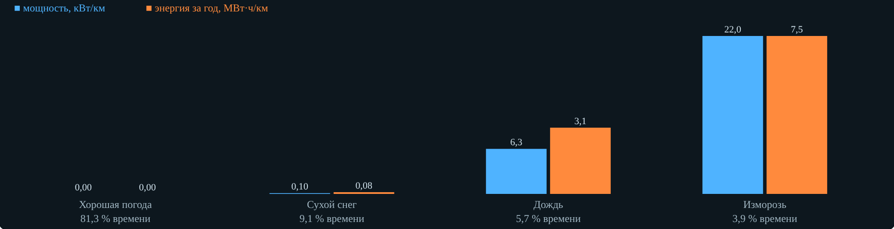

Техника высоких напряжений
Пособие студента
Тема 5. Коронный разряд
Разобранные примеры, задачи для самостоятельной работы и случаи с объектов
| Как работать. Сначала разберите примеры — у каждого есть проверка в интерактиве «Коронный разряд». Затем решите задачи для самостоятельной работы: ответы сверьте с вкладкой 7 интерактива или у преподавателя. Случаи из раздела 3 — во вкладке 6 с вопросами. Раздел 5 — бланки мини-опытов из-под вкладок 1–4: заполните их на паре и обсудите с группой. |
1. Главные формулы
| Что | Формула |
|---|---|
| Начальная напряжённость, r0 < 1 см (Пик, 1.31) | Eк = 30,3·m·δ·(1 + 0,298/√(δr0)), кВ/см |
| То же, r0 > 1 см (Залесский, 1.32) | Eк = 24,5·m·δ·(1 + 0,613/(r0δ)0,4) |
| Плотность воздуха | δ = (p/760)·293/(273 + t) |
| Коаксиал | Uк = Eкr0ln(R/r0) |
| Провод над землёй | Uк = Eкr0ln(2h/r0) |
| Трёхфазная линия (1.37) | Uк = 21,2δr0ln(S/r0)m1m2, кВ действ. |
| Ток короны в коаксиале (Таунсенд) | I = 8πε0μU(U − Uк)/(R²ln(R/r0)) |
| Повторное зажигание (модель) | U0 = 2Uк − Uмакс |
| Потери по Q(U) (1.34, 1.35) | W = ∮U dQ; P = f∮U dQ |
| Потери по Пику (1.36) | P = (241/δ)(f + 25)√(r0/S)(Uф − Uк)²·10⁻⁵ кВт/(км·фаза) |
| Расщеплённые фазы (1.40) | P = 2,4·10⁻⁶·Um²·exp[8,7(Um/Uк − 0,53)] кВт/км |
| Годовые потери (1.41) | ΣPк = ΣPкiψi |
2. Разобранные примеры
Пример 1. Начальная напряжённость тонкого провода
Дано: гладкий провод r0 = 0,5 см, δ = 1, m = 1.
√(δr0) = √0,5 = 0,707.
Eк = 30,3·(1 + 0,298/0,707) = 30,3·1,421 = 43,1 кВ/см.
Ответ: 43,1 кВ/см (амплитуда). У тонкого провода Eк заметно больше 30 кВ/см.
Пример 2. Летом и с шероховатостью
Дано: тот же провод, m = 0,85, 750 мм рт. ст., +28 °C.
δ = (750/760)·(293/301) = 0,961.
Eк = 30,3·0,85·0,961·(1 + 0,298/√0,480) = 24,74·1,430 = 35,4 кВ/см.
Ответ: 35,4 кВ/см — на 18 % ниже, чем у гладкого провода при δ = 1.
Пример 3. Напряжение зажигания в коаксиале
Дано: r0 = 1 мм, R = 10 см, δ = 1, m = 1.
Eк = 30,3·(1 + 0,298/√0,1) = 30,3·1,942 = 58,9 кВ/см.
Uк = 58,9·0,1·ln 100 = 58,9·0,1·4,605 = 27,1 кВ.
Ответ: 27,1 кВ.

Рис. 1. Проверка во вкладке 1: «Коаксиал», r0 = 1 мм, R = 10 см
Пример 4. ВЛ 220 кВ в дождь
Дано: АС-300 (r0 = 1,2 см), S = 7 м, m1 = 0,9, m2 = 0,8, δ = 1, f = 50 Гц, Uф = 127 кВ.
Uк = 21,2·1·1,2·ln(700/1,2)·0,9·0,8 = 21,2·1,2·6,369·0,72 = 116,7 кВ.
Uф − Uк = 10,3 кВ; √(r0/S) = √(1,2/700) = 0,0414.
P = 241·75·0,0414·10,3²·10⁻⁵ = 0,80 кВт/(км·фаза).
Ответ: 0,80 кВт/(км·фаза), на линию 2,4 кВт/км. В учебнике коэффициент 24,1 — опечатка, у Пика 241.
Пример 5. Годовые потери
Дано: P: хорошая погода 0,05 кВт/км, сухой снег 0,4, дождь 1,2, изморозь 3,0; часы по табл. 1.3.
0,05·7120 = 356; 0,4·800 = 320; 1,2·500 = 600; 3,0·340 = 1020.
Сумма — 2296 кВт·ч/км; доля изморози 1020/2296 = 44 %.
Ответ: 2296 кВт·ч/км; изморозь — 3,9 % времени и 44 % потерь.

Рис. 2. Вкладка 4: потери по группам погоды
Пример 6. Вольт-кулоновая характеристика
Дано: Uк = 300 кВ, Uмакс = 380 кВ; площадь Q(U) — 0,24 Дж/м за период, f = 50 Гц.
U0 = 2·300 − 380 = 220 кВ.
P = f·∮U dQ = 50·0,24 = 12 Вт/м = 12 кВт/км.
Ответ: U0 = 220 кВ; P = 12 кВт/км.

Рис. 3. Вкладка 3: вольт-кулоновая характеристика
3. Случаи с объектов
3.1. Линия гудит только в туман
Жители посёлка у ВЛ 220 кВ жалуются: в ясную погоду линию не слышно, а в туман, морось и при изморози она трещит и гудит, на телевизорах помехи. Провод — АС-300, расстояние между фазами около 7 м, рабочее напряжение не менялось.
Вопрос: Почему корона появляется только в плохую погоду?
Ваш ответ: ____________________________________________________________
3.2. Белый налёт в лобовых частях
При ремонте двигателя 6 кВ насоса, который два года работал от преобразователя частоты, на выходе стержней из паза нашли белый порошок, лак обесцвечен и потрескался. Сопротивление изоляции в норме.
Вопрос: Что здесь произошло?
Ваш ответ: ____________________________________________________________
3.3. Кольцо на полимерном изоляторе
На новой ВЛ 220 кВ полимерные подвесные изоляторы смонтировали без защитных колец у провода. Через два года при осмотре оболочки у металлического оконцевателя побелели, появились мелкие кратеры, гидрофобность потеряна.
Вопрос: Какая причина наиболее вероятна?
Ваш ответ: ____________________________________________________________
3.4. Ложные частичные разряды
При приёмке кабеля 10 кВ измерение частичных разрядов показало 300 пКл. Сигнал не исчез, когда кабель отключили и подали напряжение только на соединительный провод. После установки экранных тороидов на вывод трансформатора и замены провода трубой фон упал до 5 пКл.
Вопрос: Что давало сигнал?
Ваш ответ: ____________________________________________________________
3.5. Кто «съедает» энергию за год
Для ВЛ 220 кВ посчитали мощность потерь на корону: хорошая погода 0,05 кВт/км, сухой снег 0,4, дождь 1,2, изморозь 3,0 кВт/км. Продолжительность групп — по табл. 1.3 учебника: 7120, 800, 500 и 340 часов.
Вопрос: Какая группа погоды даёт наибольшую часть годовых потерь?
Ваш ответ: ____________________________________________________________
3.6. Полярность электрофильтра
На электрофильтре сушильного отделения обогатительной фабрики после ремонта источника питания полярность коронирующих электродов случайно сменили на положительную. Пробои между электродами участились, пришлось снизить напряжение, степень очистки газа упала.
Вопрос: Почему электрофильтры работают на отрицательной полярности?
Ваш ответ: ____________________________________________________________
4. Задачи для самостоятельной работы
Гладкий провод r0 = 0,3 см, δ = 1. Найдите Eк, кВ/см. Ответ: ____________
Провод r0 = 0,3 см, m = 0,9, мороз −30 °C, 775 мм рт. ст. Найдите Eк, кВ/см. Ответ: ____________
Провод r0 = 0,5 см на высоте 8 м, δ = 1, m = 1. Найдите Uк (амплитуда), кВ. Ответ: ____________
Шина диаметром 3 см (r0 = 1,5 см), m = 1, δ = 1. Найдите Eк по формуле Залесского, кВ/см. Ответ: ____________
ВЛ 110 кВ: АС-150 (r0 = 0,85 см), S = 4 м, m1 = 0,9, изморозь m2 = 0,7, δ = 1. Найдите Uк по ф. 1.37, кВ. Есть ли корона при Uф = 66 кВ? Ответ: ____________
ВЛ 220 кВ из примера 4 в изморозь (m2 = 0,7). Найдите потери по Пику, кВт/(км·фаза). Ответ: ____________
Площадь вольт-кулоновой характеристики — 0,05 Дж/м за период, f = 50 Гц. Найдите потери, кВт/км. Ответ: ____________
Коаксиал r0 = 1 мм, R = 10 см, Uк = 27,1 кВ, положительная корона μ = 1,5·10⁻⁴ м²/(В·с), U = 35 кВ. Найдите ток по Таунсенду, мА/м. Ответ: ____________
5. Мини-опыты в интерактиве
Каждый опыт — 5–7 минут. Выполните шаги в интерактиве, запишите значения в таблицу, найдите отношения и проверьте себя кнопкой «Проверить» (допуск 3 %). Вопросы в конце обсудите в группе.
5.1. Когда загорается корона (вкладка 1)
Электроды «Провод над землёй», r0 = 1 см, h = 10 м, гладкий чистый провод, нормальные условия. Нажмите «Плавно поднять» и заметьте, при каком U появляется фиолетовый чехол. Запишите Uк.
Не меняя остального, выберите «0,9 — витой» и загрязнение «промзона». Запишите Uк.
Верните гладкий чистый провод и выберите погоду «Апатиты, мороз −30 °C». Запишите Uк.
Найдите отношения к первому опыту.
| Что записать | Значение | Ед. |
|---|---|---|
| Uк: гладкий, чистый, норм. условия | кВ | |
| Uк: витой, промзона | кВ | |
| Отношение Uк(витой, промзона)/Uк(гладкий) | — | |
| Uк: мороз в Апатитах | кВ | |
| Отношение Uк(мороз)/Uк(норм.) | — |
Обсудите в группе:
Почему отношение для витого провода в промзоне в точности равно произведению коэффициентов, а для мороза оно меньше δ = 1,23? Посмотрите, где δ стоит в формуле Пика.
Что опаснее для линии у обогатительной фабрики: мороз или пыль на проводе? Что будет при изморози в той же промзоне?
5.2. Полярность и ток короны (вкладка 2)
Коаксиал R = 10 см, радиус провода r0 = 1,0 мм. Запишите Uк.
Режим «Униполярная, провод +», U = 40 кВ: запишите ток I+. Переключите на «провод −» и запишите I−.
Верните «провод +», поднимите U до 53 кВ — превышение U − Uк стало примерно вдвое больше. Запишите ток.
Найдите отношения и сравните второе с оценкой Таунсенда U(U − Uк).
| Что записать | Значение | Ед. |
|---|---|---|
| Uк | кВ | |
| I+ при 40 кВ | мА/м | |
| I− при 40 кВ | мА/м | |
| Отношение I−/I+ | — | |
| I+ при 53 кВ | мА/м | |
| Отношение I(53)/I(40) | — | |
| То же по Таунсенду: 53(53 − Uк)/(40(40 − Uк)) | — |
Обсудите в группе:
Отношение I−/I+ оказалось равно отношению подвижностей. Почему ток короны во внешней зоне задают ионы, а не электроны?
Почему при вдвое большем превышении ток вырос больше чем вдвое? Какой множитель в формуле Таунсенда за это отвечает?
Где на практике выгодна отрицательная корона, а где мешает? Вспомните электрофильтры и вкладку «Оборудование».
5.3. Площадь вольт-кулоновой характеристики (вкладка 3)
Оставьте «рост ёмкости» 1,5. Поставьте Uмакс/Uк = 1,2 и запишите U0 и потери P.
Повторите для 1,5 и 1,8.
Найдите, во сколько раз выросли потери при переходе от 1,2 к 1,8. Сравните с отношением превышений (1,8 − 1)/(1,2 − 1) и их квадратов (1,8 − 1)²/(1,2 − 1)² — так считала бы формула Пика.
Поставьте 1,5 и измените «рост ёмкости» на 2,5. Запишите P.
| Что записать | Значение | Ед. |
|---|---|---|
| U0 при 1,2 | кВ | |
| P при 1,2 | кВт/км | |
| P при 1,5 | кВт/км | |
| P при 1,8 | кВт/км | |
| Отношение P(1,8)/P(1,2) | — | |
| (1,8 − 1)²/(1,2 − 1)² | — | |
| P при 1,5 и росте ёмкости 2,5 | кВт/км |
Обсудите в группе:
Почему U0 меньше Uк и уменьшается с ростом амплитуды? Что остаётся в пространстве после предыдущего полупериода?
В модели параллелограмма потери растут пропорционально превышению Uмакс − Uк, а по формуле Пика — как его квадрат. Какое допущение модели (постоянный «рост ёмкости») это объясняет? Что сильнее влияет на площадь — амплитуда или рост ёмкости?
Как по осциллограмме тока линии (б) понять, что корона горит, не глядя на напряжение?
5.4. Сколько энергии съедает корона за год (вкладка 4)
ВЛ 220 кВ, один провод в фазе, рабочее напряжение 1,05Uном, m1 = 0,9, чистый провод, нормальные условия, часы погоды по табл. 1.3. Запишите годовые потери и долю изморози.
Север: впишите в таблицу 700 ч изморози и 6760 ч хорошей погоды (остальное не меняйте). Запишите годовые потери.
Верните часы 340 и 7120 и выберите загрязнение «промзона». Запишите годовые потери.
Найдите отношения к первому опыту.
| Что записать | Значение | Ед. |
|---|---|---|
| Годовые потери, исходный режим | МВт·ч/км | |
| Доля изморози в потерях | % | |
| Годовые потери, север: 700 ч изморози | МВт·ч/км | |
| Отношение север / исходный | — | |
| Годовые потери, промзона | МВт·ч/км | |
| Отношение промзона / исходный | — |
Обсудите в группе:
Изморозь бывает меньше 4 % времени. Почему её доля в потерях так велика? Посмотрите на столбец Uф/Uк.
Что выгоднее для линии у горно-обогатительного комбината: провод большего сечения или расщеплённая фаза? Проверьте оба варианта во вкладке.
Как бы вы оценили коэффициент загрязнения для реальной линии? Какие измерения нужны?
6. Задачи интерактива
Двенадцать задач вкладки 7 с подсказками; ответ принимается с допуском 2–3 %.
Начальная напряжённость провода. Гладкий провод радиусом 0,5 см (m = 1), нормальные условия (δ = 1). Найдите начальную напряжённость короны по формуле Пика, кВ/см.
Летний витой провод. Тот же провод r0 = 0,5 см, но витой и шероховатый (m = 0,85), летом: 750 мм рт. ст., +28 °C. Найдите Eк, кВ/см.
Коаксиальная модель. Провод радиусом 1 мм в заземлённой трубе радиусом 10 см, δ = 1, m = 1. Найдите напряжение зажигания короны Uк (амплитуда), кВ.
Провод над землёй. Гладкий провод радиусом 1 см на высоте 10 м над землёй, δ = 1. Найдите Uк (амплитуда), кВ.
Толстый провод. Провод радиусом 2 см, m = 1, δ = 1. По какой формуле считать Eк? Найдите её, кВ/см.
ВЛ 110 кВ в хорошую погоду. ВЛ 110 кВ, провод АС-120 (r0 = 0,76 см), расстояние между фазами 4 м, m1 = 0,9, хорошая погода (m2 = 1), δ = 1. Найдите Uк по ф. 1.37, кВ. Есть ли корона при Uф = 63,5 кВ?
ВЛ 220 кВ в дождь. ВЛ 220 кВ: АС-300 (r0 = 1,2 см), S = 7 м, m1 = 0,9, дождь m2 = 0,8, δ = 1, f = 50 Гц, Uф = 127 кВ. Найдите потери на корону по Пику, кВт на км и фазу.
Годовые потери. Мощность потерь на корону ВЛ: хорошая погода 0,05 кВт/км, сухой снег 0,4, дождь 1,2, изморозь 3,0 кВт/км. Продолжительность групп — 7120, 800, 500 и 340 ч (табл. 1.3). Найдите энергию потерь за год, кВт·ч на км.
Площадь вольт-кулоновой характеристики. Площадь вольт-кулоновой характеристики провода за период — 0,24 Дж на метр длины, частота 50 Гц. Найдите мощность потерь на корону, кВт на км.
Повторное зажигание. Провод с Uк = 300 кВ работает при амплитуде 380 кВ. По модели с постоянной напряжённостью у провода найдите напряжение повторного зажигания U0, кВ.
Ток униполярной короны. Коаксиал из задачи 3 (r0 = 0,1 см, R = 10 см, Uк = 27,1 кВ) под постоянным отрицательным напряжением 40 кВ, подвижность ионов μ = 2·10⁻⁴ м²/(В·с). Найдите ток короны по формуле Таунсенда I = 8πε0μU(U − Uк)/(R²ln(R/r0)), мА на метр.
Потери на ВЛ 500 кВ. Фаза ВЛ 500 кВ расщеплена на 3 провода. Амплитуда фазного напряжения Um = 408 кВ, напряжение возникновения короны (амплитуда) Uк = 480 кВ. Найдите потери по формуле Егоровой и Тиходеева, кВт/км.